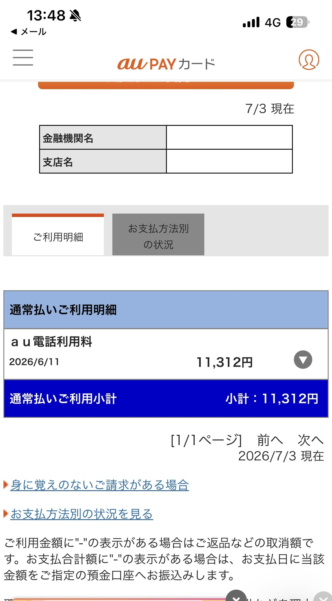
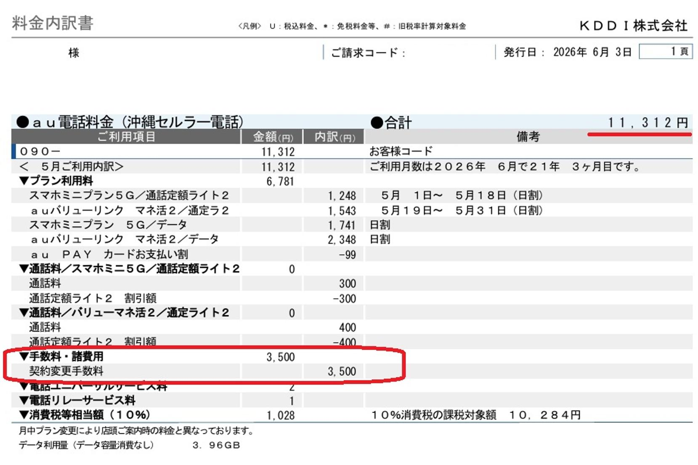

うるがいの話 ある日
最新: ａｕｐａｙの請求金額判明【うるがいの話 ある日】とは 一日だけのプログです
『うるがいの話』の最新一日だけのプログで、通信料が少なく経済的だ。カニの画像をクリックすると全ての日付が載る『うるがいの話』サイトを表示します
|
|
【うるがいの話】 うるがい(ｳﾙｶﾞｲ urugai)とは、『もずくがに』の名前でとても大きくなります。 |
|---|---|
|
|
【カミマヤーの話】 猫のことを方言でマヤーといいます。カミマヤー（kamimayaa）とは、神の猫のことです。 |
|
【たながぁの音楽】 たながぁ（ﾀﾅｶﾞｰ tanagaa）とは手長えびのことで、何種類かあり大きいのは車 エビぐらいになります。 |

|
【ぶながぁの話】 ぶながぁ(ﾌﾞﾅｶﾞｰ bunagaa)とは、赤い髪の毛、赤い身体、そして身長は１ｍ２０ｃｍ ぐらい、川の蟹を食べているの目撃された。場所は沖縄県国頭郡大宜味村のと ある村僕の隣近所に住んでいる爺さんから、聞いた話です。 |
|
|
【ギーマの話】 ギーマ(giima)とは、山原の里山に咲くスズランに似た、 花を付けます。実は食べられます、 気が付くと口の周りが紫になっています。 |
2026年07月14日 (火）ａｕｐａｙの請求金額判明
16:19
ａｕ故障紛失サポート（ＡＣＳ）／税込（１，５５０円）が勝手
に入っている
と、ａｕ Ｓｔｙｌｅ新都心へ予約サイトに書き込んだ。相談員
が、『ａｕ故障紛失サポートは既に解約されてます』、・・・・
あ！、『ａｕの場合、請求は翌々月になります』、あ！、１０分
で退散する。あー、良かった、こちらの早とちりだった。そもそ
もは、７月６日のこのメールが発端だ、１万円？、明細は？

で、明細が分からない。見に覚えがない。その時はあたふたした。
ａｕ相談員が簡単に説明した。

言い訳、５月分が７月６日にメールで知らせれたから。でも、こ
れは、７月１０日の口座引き落としのタイミングだから正しいの
だが。補足、au payカード探しました。２０２０年２月１５日に
有効期限２０２９年１１月が、ショップから貰ったままのが。